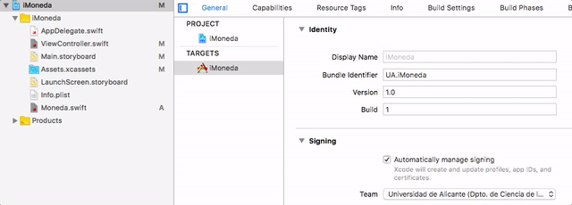

Ejercicios de introducción a las aplicaciones iOS (1,5 puntos)¶
Desarrolla una app llamada iMoneda con la que se pueda "lanzar" una "moneda virtual" a ver si sale cara o cruz.
La interfaz de la app será muy sencilla y constará de:
- Un
Buttonque al ser pulsado "lanzará" la moneda. - Un
UIImageViewpara mostrar la imagen de la cara o de la cruz - Un
Labelpara mostrar el resultado en modo texto ("cara" o "cruz")

- La vista (0,5 puntos): Crea la interfaz arrastrando los componentes y colocándolos donde creas conveniente.
-
Añádele al proyecto las imágenes de la cara y de la cruz. Abre la "carpeta"
Assets.xcassetsy déjalas allí, en la lista de recursos, justo debajo del que poneAppIcon(NO en el icono de la carpeta assets). Verás que aparecen con un nombre que es el mismo del archivo pero sin la extensión. Podemos usar este nombre para referenciarlas en el código, luego veremos cómo.
-
El modelo(0,25 puntos): Crea:
- Un enumerado
Tiradacon los valores decaraycruzque se pueda convertir aString - Una clase
Monedacon un único métodolanzar()que devuelva unaTiradaal azar
- Un enumerado
- El controlador (0,75 puntos):
- Define en él una propiedad del tipo
Moneda - Crea dos outlet, uno para acceder al componente
UIImageViewy otro para elLabel - Crea un action que vincule el botón con algún método del
ViewController - En el código del action:
- Usa la propiedad del tipo
Monedadel controlador para obtener una tirada - Muestra el resultado en modo texto en el
Label, ("cara", "cruz") - Muestra la imagen apropiada
- Usa la propiedad del tipo
- Define en él una propiedad del tipo
{kind=link}
{kind=link}
Aclaración: Cómo trabajar con imágenes
Las imágenes se representan en iOS con objetos
UIImage. Podemos obtener la imagen correspondiente a un recurso de los assets con su nombre:
1 | let imagenCara = UIImage(named:"cara") |
El
UIImageViewes un componente de interfaz que contiene unaUIImage. Podemos cambiar la imagen asignándola a la propiedadimagedelUIImageView.
1 2 3 | let imagenCara = UIImage(named:"cara") //SUPONIENDO que el outlet que representa al UIImageView es imageView self.imageView.image = imagenCara |